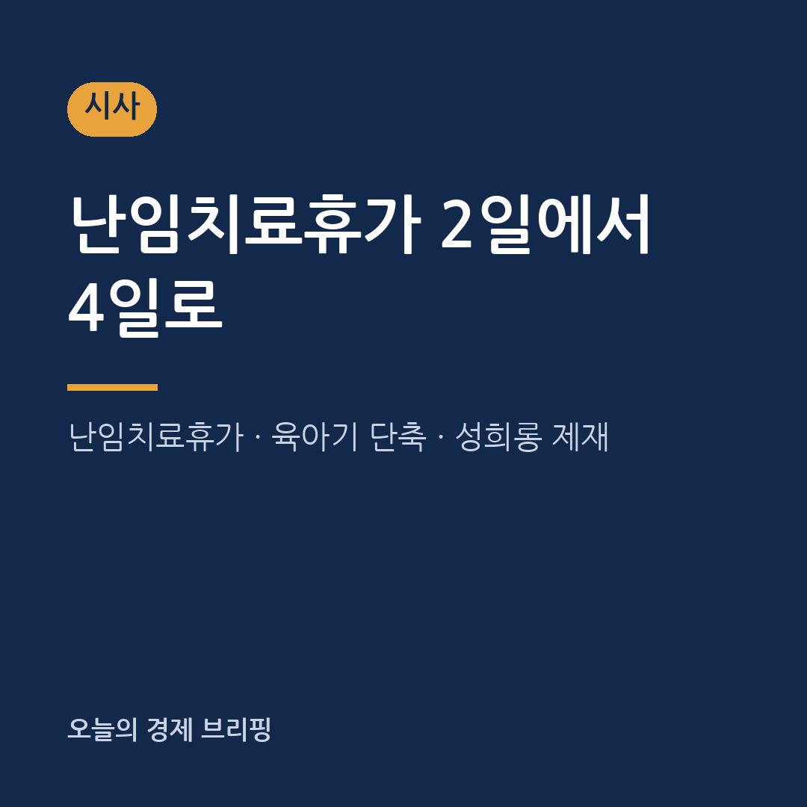
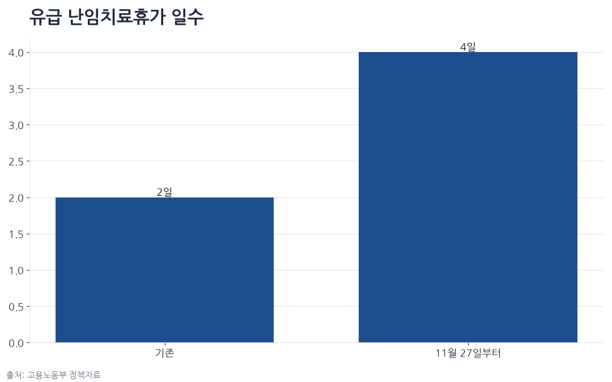

2026-11-27-1139-naver 발행 키트 · 이 페이지는 검색에 노출되지 않습니다.
제목
카테고리
시사태그
본문 (그림·표 포함)
휴대폰 블로그 앱에서는 그림이 같이 붙지 않을 수 있어요. 그때는 [글자만 복사] 후 아래 이미지를 저장해 [그래프1]·[표1] 자리에 첨부하세요.

출근해서 일하다 보면 "이런 건 회사 규정이 어떻게 되더라?" 싶을 때가 있잖아요. 오늘 11월 27일부터 직장 생활과 맞닿은 규정 몇 가지가 바뀌었어요. 내가 해당되지 않아도 동료나 후배에게 알려 줄 수 있으니 한번 훑어봐요.
▶ 난임치료휴가, 이틀에서 나흘로
가장 눈에 띄는 건 난임 치료를 받는 분들을 위한 유급 휴가예요. 기존에는 2일이었는데 오늘부터 4일까지 쓸 수 있어요.
시술 일정은 병원 사정에 맞춰 잡아야 해서 하루 이틀 쉬는 걸로는 빠듯했던 분들이 많거든요. 늘어난 이틀이 실제로 숨통을 틔워 줄 수 있어요.

▶ 육아기 단축근무, 회사 답변이 늦어지지 않게
아이를 키우는 동안 근무시간을 줄이는 육아기 단축근무도 손질됐어요. 신청을 받아 줄 수 있는 상황이라면 회사가 14일 이내에 근로자에게 알려 줘야 한다는 의무가 새로 생겼어요.
그동안은 신청서를 냈는데 답이 언제 올지 몰라 마음 졸이는 경우가 있었을 거예요. 이제는 기한이 정해졌으니 계획을 세우기가 한결 편해져요.
▶ 직장 내 성희롱, 제재 받는 사람 범위가 넓어졌어요
세 번째는 직장 내 성희롱과 관련한 제재예요. 예전에는 사업주만 과태료 대상이었는데, 이제는 법인의 대표자도 포함돼요. 사업주나 대표자의 친족인 상급자와 근로자까지 대상이 넓어졌어요.
가족 관계라서 문제 제기가 어려웠던 작은 회사 분들에게 의미가 있는 변화예요.
오늘부터 달라진 직장 규정
| 항목 | 달라진 점 |
|---|---|
| 난임치료휴가 | 유급 2일에서 4일로 확대 |
| 육아기 단축근무 | 회사가 14일 이내 통지 |
| 직장 내 성희롱 제재 | 법인 대표자·친족 상급자 등 대상 확대 |
출처: 고용노동부 정책자료
▶ 오늘 같은 날 학교는 어땠을까요
같은 날 아이 있는 집에는 다른 소식도 있었어요. 전국 학교 비정규직 노동자들의 총파업으로 전북에서만 392개 학교의 급식에 차질이 생겼고, 초등 돌봄교실 운영에도 영향이 있었다고 해요.
우리 아이 학교가 어떻게 운영되는지는 학교 알림장이나 공지로 확인하는 게 가장 정확해요. 도시락이나 돌봄 대안이 필요한 분들은 미리 챙겨 두세요.
▶ 그래서 오늘 확인해 볼 것
규정이 바뀌어도 회사 안내가 늦으면 모르고 지나가기 쉬워요. 취업규칙이나 사내 공지에 바뀐 내용이 반영됐는지 인사 담당 부서에 한 번 물어보면 좋아요.
난임 치료나 육아기 단축근무를 고민 중인 동료가 있다면 이번 변화를 슬쩍 알려 주세요. 정확한 신청 방법과 요건은 고용노동부 안내 자료에서 확인할 수 있어요.
▶ 한 줄 정리
휴가가 늘고, 답변 기한이 생기고, 제재 범위가 넓어진 하루예요. 여러분 회사에서는 이런 규정이 어떻게 적용되고 있나요? 댓글로 편하게 이야기해 주세요.
출처 (본문 맨 아래에 붙여넣기 권장)
- 고용노동부 정책자료, 2026.11.27..부터 시행되는 '직장 내 성희롱 제재 대상확대, 난임치료휴가, 육아기 단축등 개정사항' 안내 자료입니다., https://www.moel.go.kr/policy/policydata/view.do?bbs_seq=20261100940 - 연합뉴스, 비정규직 파업으로 전북 392개 학교 급식 차질, https://www.yna.co.kr/view/AKR20261127075200055